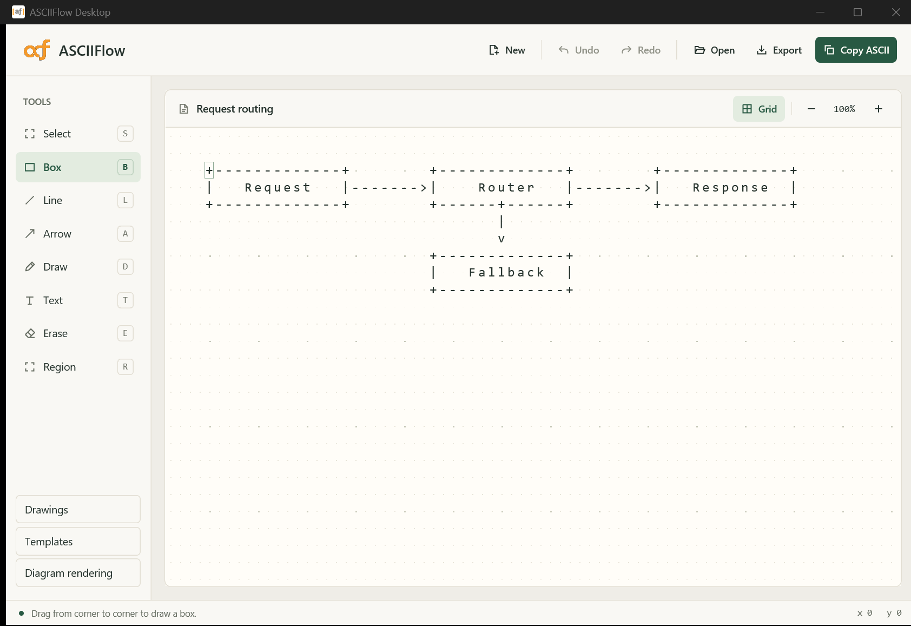
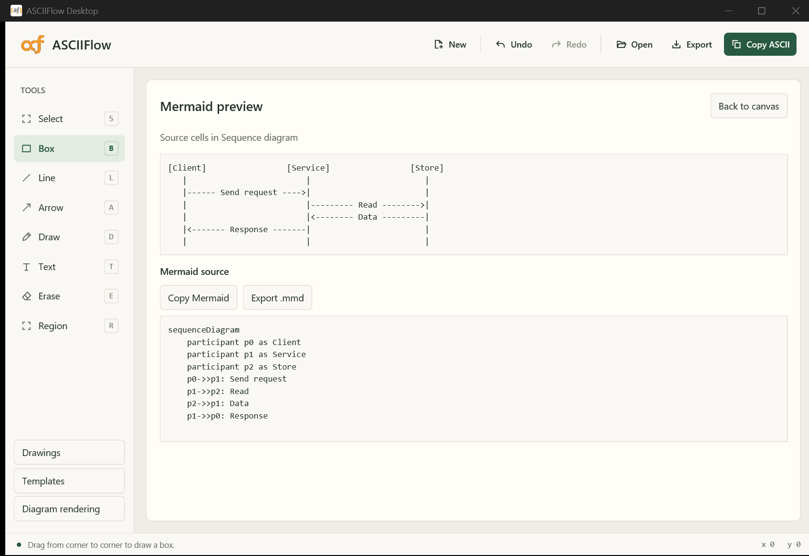
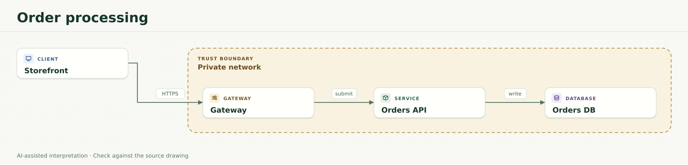

Draw in
plain text.
Sketch a flowchart, system, or sequence on a character grid. Then paste it into a README, a code comment, or anywhere text goes.
Windows, Linux, and macOS

From sketch to shared diagram
Draw directly on the grid or open a template for a familiar layout, then keep working in the same drawing.
Sketch the idea
Place boxes, connect them with arrows, and type anywhere. Select and move cells as the diagram changes.
Pick up where you left off
Edits autosave locally. The drawing library lets you reopen, rename, or duplicate a diagram.
Share the result
Copy the whole canvas or a selection as text. Export an SVG or PNG when you need an image.
Convert one region at a time
Mark the cells you want to convert. The Mermaid preview shows the selected ASCII and generated source together so you can check the result before copying it or saving a .mmd file.
Start with a pre-drawn flowchart, sequence diagram, swimlane, or architecture template. Mermaid conversion runs locally.

Need a styled architecture diagram?
Connect an OpenAI-compatible endpoint, review the inferred components and connections, then export standalone HTML or SVG. Only the ASCII shown in the send preview is submitted when you choose to send it.
[Storefront]
|
HTTPS
+-----|-- Private network ---------------+
| v |
| [Gateway] -- submit --> [Orders API] |
| | |
| write |
| v |
| [Orders DB] |
+----------------------------------------+

Install ASCIIFlow Desktop
Download version 0.1.0 for Windows x86-64, Linux x86-64, or macOS Apple Silicon, or install it from your terminal.
Install from the command line
Paste the command for your platform. The installer verifies the download and adds the app to your PATH.
Windows x86-64
Run in PowerShell.
irm https://raw.githubusercontent.com/3rg0n/asciiflow-desktop/main/docs/install.ps1 | iexLinux and macOS
Run in your terminal. The installer selects the archive for your platform.
curl -fsSL https://raw.githubusercontent.com/3rg0n/asciiflow-desktop/main/install.sh | bashOpen a new terminal after installing and run asciiflow-desktop.